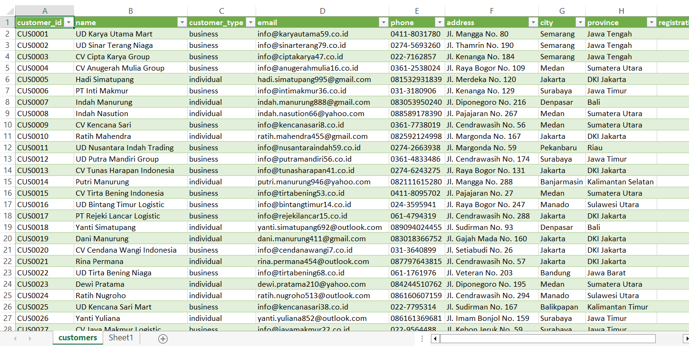
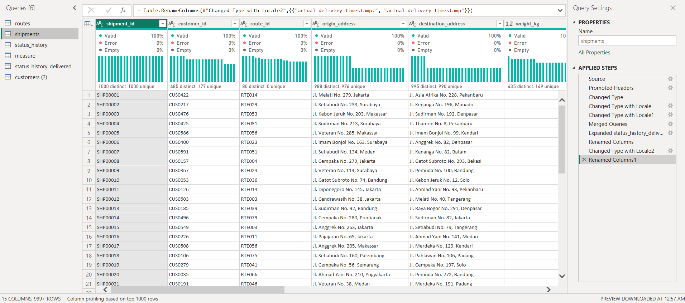
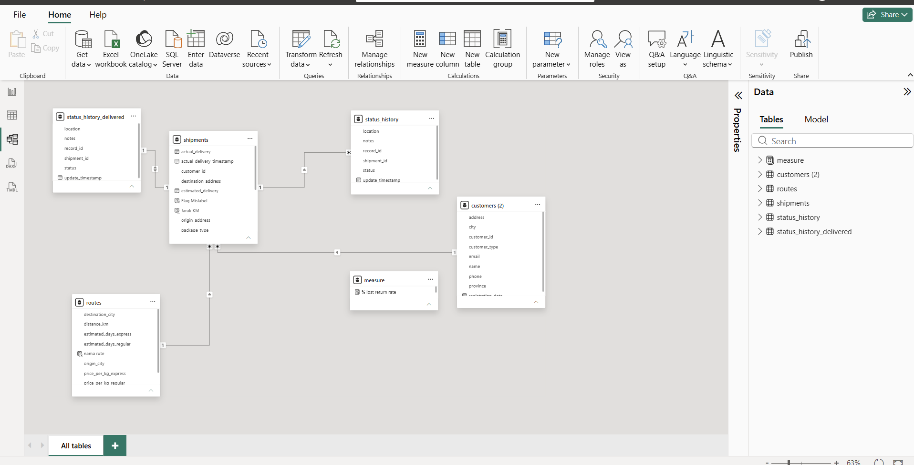
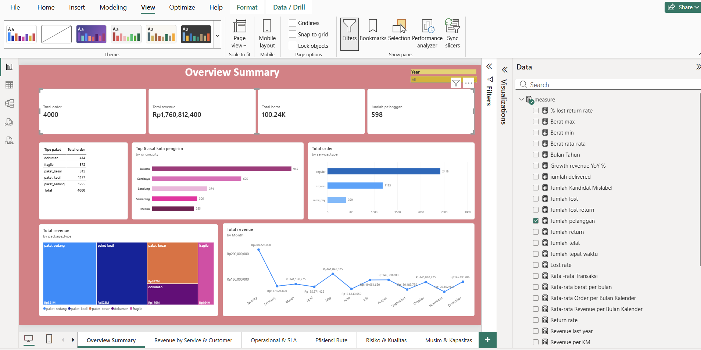
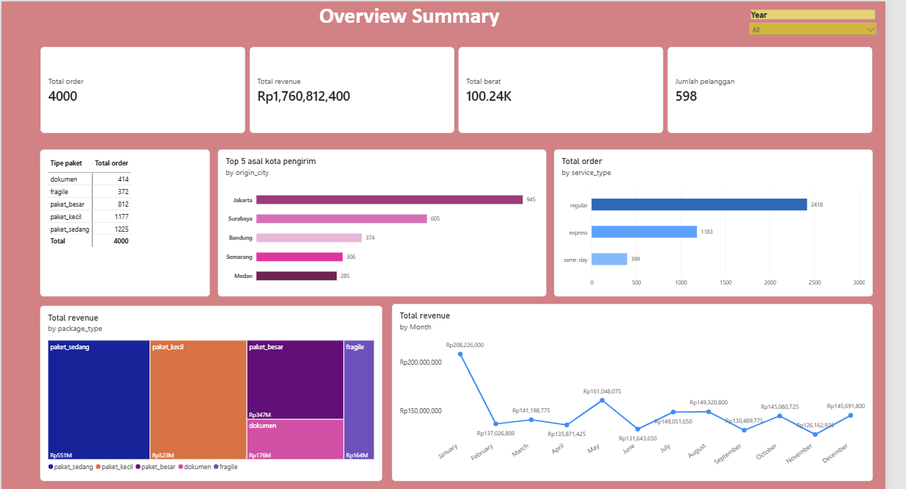
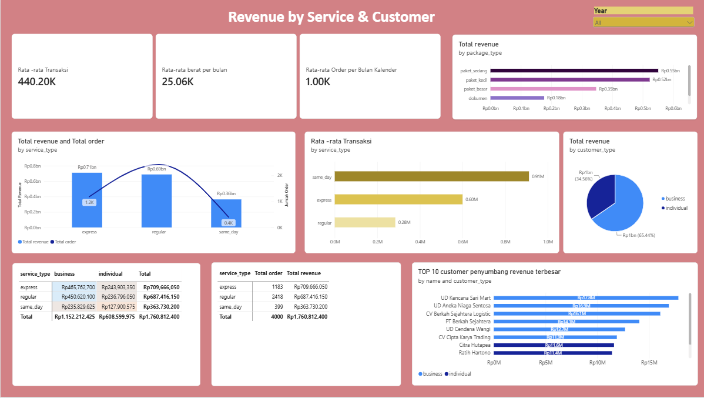
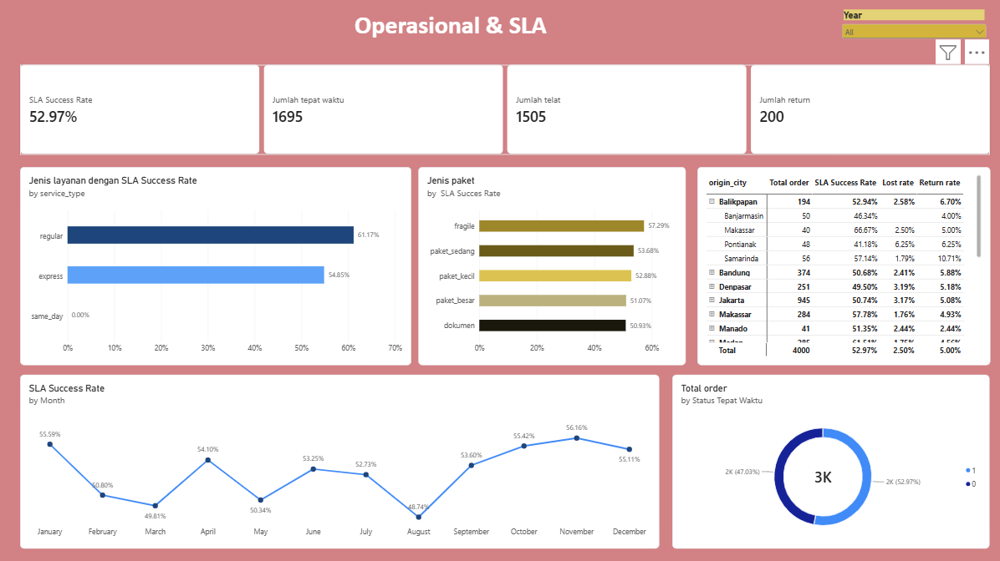
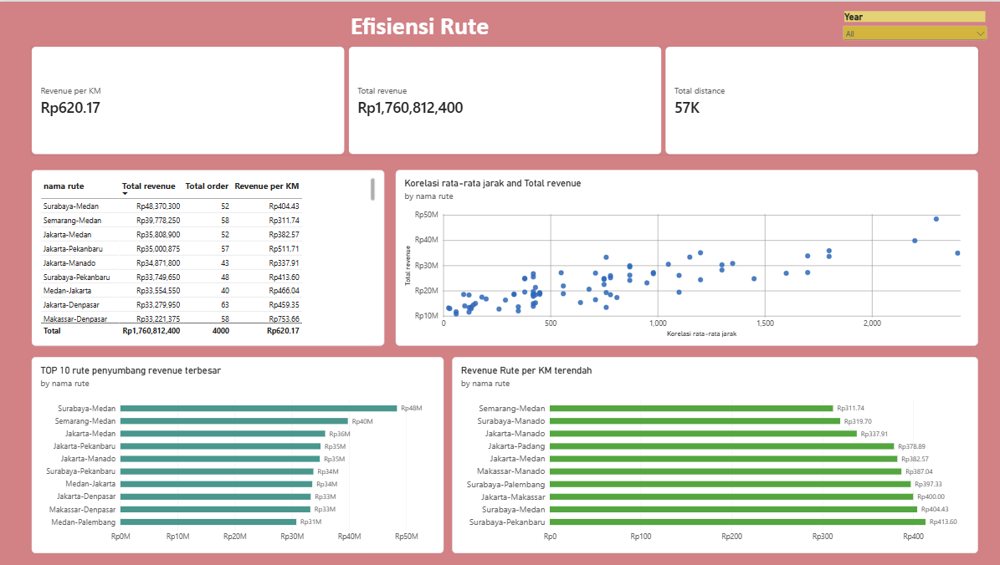
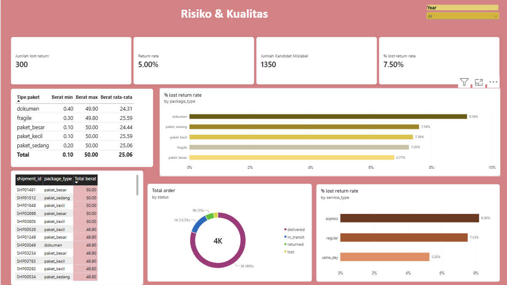
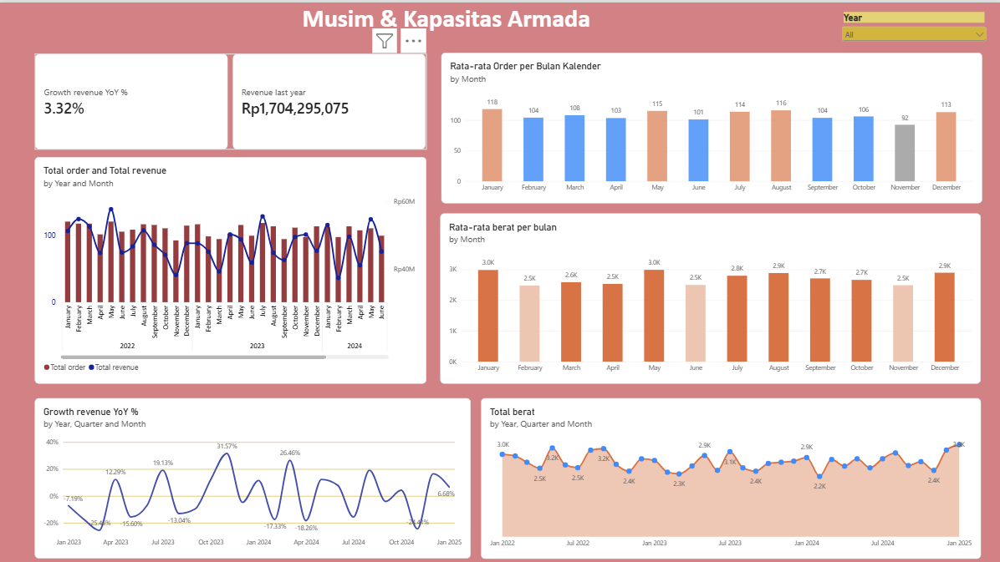

Logistics Performance & SLA Dashboard
Analisis end-to-end efisiensi rantai pasok, profitabilitas rute, dan kepatuhan Service Level Agreement (SLA) menggunakan Power BI.

Business Problem
Manajemen operasional logistik menghadapi kendala visibilitas dalam melacak performa pengiriman harian dan profitabilitas rute.
Perusahaan logistik membutuhkan alat ukur yang komprehensif untuk mengevaluasi efisiensi operasional. Tanpa pemantauan yang terpusat, Operations Manager kesulitan untuk mendeteksi anomali (seperti paket yang hilang atau tingkat pengembalian yang tinggi), mengukur kepatuhan ketepatan waktu (SLA) berdasarkan tipe layanan, serta mengidentifikasi rute pengiriman mana yang menghasilkan margin keuntungan (*profitabilitas*) atau justru membebani biaya perusahaan.
Business Questions
Untuk menyelesaikan masalah bisnis di atas, proyek analisis data ini dirancang untuk menjawab 10 pertanyaan strategis berikut:
- Distribusi Layanan: Bagaimana proporsi penggunaan peta layanan pengiriman (Regular, Express, atau Same Day)?
- Tingkat Kegagalan: Berapa rasio volume paket yang berstatus hilang (*lost*) atau dikembalikan (*return*)?
- Kesesuaian Spesifikasi: Apakah terdapat korelasi atau kesesuaian antara berat aktual paket dengan kategori layanan yang dipilih oleh pelanggan?
- Profitabilitas Rute: Rute pengiriman mana yang menghasilkan margin keuntungan (*profit*) tertinggi dan terendah?
- Kepatuhan SLA: Bagaimana rasio ketepatan waktu (*On-Time*) versus keterlambatan (*Late*) untuk setiap layanan?
- Segmentasi Pelanggan: Antara segmen Bisnis (B2B) dan Individu (B2C), manakah yang memberikan nilai pendapatan tertinggi?
- Tren Volume: Bagaimana tren pengiriman bulanan, dan apakah terdapat lonjakan signifikan pada periode musim liburan (Lebaran) & Harbolnas?
- Audit Anomali Data: Bagaimana penanganan anomali terhadap 50 resi pengiriman berstatus "Delivered" yang kehilangan log tanggal penyelesaian?
- Efisiensi Rute: Rute mana yang beroperasi dalam kondisi rugi (Loss) dan memerlukan eskalasi (penyesuaian harga atau penutupan jalur)?
- Solusi Manajerial: Bagaimana merancang visualisasi Delivery Performance Dashboard yang optimal bagi Operations Manager?
Dataset & Data Source
Dataset ini merupakan data relasional yang mensimulasikan operasional Kirimlaju, dimuat ke Power BI melalui Power Query dalam mode Import. Terdiri dari 4 tabel utama: shipments — 4.000 baris, 18 kolom (data inti tiap pengiriman: ID, rute, pelanggan, jenis layanan, berat, biaya, status, dan tanggal-tanggal terkait) customers — 600 baris, 9 kolom (identitas & tipe pelanggan: business/individual) routes — 80 baris, 9 kolom (rute asal-tujuan, jarak, estimasi hari, tarif per kg) status_history — 12.747 baris, 6 kolom (log setiap perubahan status pengiriman lengkap dengan timestamp dan lokasi — sumber data untuk merekonstruksi timeline tiap paket).

Data Formatting / Cleaning
Beberapa langkah pembersihan dan validasi data dilakukan sebelum data dianggap siap dianalisis:
.pickup_date, estimated_delivery, actual_delivery) ke tipe data date/datetime yang benar.tracking_number dan shipment_id — hasilnya bersih, tidak ditemukan duplikasi.customer_id atau route_id yang orphan (tidak terhubung ke tabel induknya).delivered namun kolom actual_delivery-nya kosong. Setelah ditelusuri lebih dalam, ternyata masalahnya lebih besar dari itu — kolom actual_delivery (tanggal) ternyata tidak konsisten dengan actual_delivery_timestamp (waktu lengkap) pada 94,5% baris data, hampir selalu bergeser 1 hari atau lebih. Solusinya, seluruh perhitungan ketepatan waktu direkonstruksi ulang menggunakan actual_delivery_timestamp yang dibulatkan ke tanggal — sumber data yang lebih bisa dipercaya karena terisi lengkap untuk seluruh 3.200 pengiriman berstatus delivered.

Create Relational Table
Model data dibangun dengan pendekatan mirip skema Star: tabel shipments berperan sebagai tabel fakta (fact table) yang menyimpan satu baris per transaksi pengiriman, dihubungkan ke tabel dimensi customers (melalui customer_id) dan routes (melalui route_id). Tabel status_history dihubungkan lewat shipment_id sebagai tabel log granular, digunakan khusus untuk merekonstruksi kronologi tiap paket (misalnya menelusuri waktu transit di hub) tanpa perlu menggabungkannya langsung ke tabel fakta utama..

Data Analysis
Lapisan analisis dibangun lewat serangkaian DAX measure yang sengaja dibuat sederhana (mayoritas COUNT , dan SUM , AVERAGE , DIVIDE ) agar mudah diaudit dan dijelaskan ke pemangku kepentingan non-teknis. Measure-measure ini dikelompokkan menjadi empat tema besar
Untuk mengukur performa operasional secara menyeluruh, analisis dibagi menjadi 4 pilar metrik (KPI) utama:
.Total order, Total revenue, Revenue last year, dan persentase pertumbuhan Growth revenue YoY %.
Total berat, Jumlah pelanggan, Rata-rata Transaksi, dan SLA Success Rate. Perhitungan Jumlah tepat waktu dan Jumlah telat didapatkan dengan membandingkan actual_delivery_timestamp (dari status history delivered) terhadap estimasi/batas waktu SLA.
Jumlah return, Lost rate, Return rate, dan % lost return rate. Selain itu, fitur Jumlah Kandidat Mislabel serta Berat min/max/avg per package_type dirancang khusus untuk mendeteksi anomali berat yang mengindikasikan salah penentuan kategori paket.
Revenue per KM dan Total distance untuk rute, serta Rata-rata berat per bulan dan tren berdasarkan Bulan Kalender untuk mendeteksi lonjakan musiman.

Dashboard Development
1. Overview Summary
Overview Summary: KPI card (total order, revenue, berat, jumlah pelanggan), tren revenue bulanan, top kota asal, distribusi order per layanan dan jenis paket.

2. Revenue by Service & Customer
Revenue by Service & Customer :Analisis mendalam kontribusi tiap service_type dan customer_type terhadap revenue, termasuk rata-rata transaksi per layanan.

3. Operasional & SLA
Operasional dan SLA :Fokus pada tren SLA Success Rate, perbandingan SLA antar layanan/jenis paket, dan matriks rute asal-tujuan dengan tingkat keterlambatan/lost/return.

4. Efisiensi Rute
Efesiensi Rute :Analisis revenue per km per rute, dilengkapi scatter chart jarak vs revenue untuk memetakan rute ke dalam kuadran (misal: jarak jauh-revenue tinggi vs jarak jauh-revenue rendah) sebagai dasar shortlist rute yang perlu dievaluasi ulang.

5. Risiko & Kualitas
Risiko & Kualitas :Pelacakan tingkat lost/return, deteksi kandidat mislabel paket berdasarkan penyimpangan berat, dan tabel detail level-shipment untuk investigasi lanjutan.

6. Musim & Kapasitas
Musim dan Kapasitas :Pola musiman volume dan berat kiriman per bulan serta pertumbuhan revenue year-over-year, sebagai input perencanaan kapasitas armada.

Key Insights
Berdasarkan eksplorasi visual dari dashboard, berikut adalah temuan utama (key insights) yang berhasil ditarik dari data operasional:
-
Konsentrasi Revenue per Layanan: Dari halaman Revenue by Service & Customer, layanan
[nama service_type]menyumbang[X]%dari total revenue, jauh di atas layanan lain — ini mengindikasikan ketergantungan yang tinggi pada satu lini layanan saja. -
Gap SLA yang Signifikan pada Rute Tertentu: Analisis pivot table di halaman Operasional & SLA menunjukkan rute
[origin ➔ destination]memiliki SLA Success Rate hanya[X]%, berada di bawah rata-rata perusahaan sebesar[Y]%. -
Rute dengan Efisiensi Rendah: Melalui kuadran scatter chart di halaman Efisiensi Rute, teridentifikasi
[jumlah]rute dengan jarak tempuh panjang namun revenue per km rendah — rute-rute ini menjadi kandidat utama untuk evaluasi tarif atau konsolidasi muatan. -
Indikasi Mislabel Paket: Analisis tabel di halaman Risiko & Kualitas menemukan
[jumlah]pengiriman dengan berat aktual jauh melampaui batas wajarpackage_type-nya. Anomali ini berpotensi merugikan perusahaan karena memengaruhi akurasi biaya kirim. -
Pola Musiman: Halaman Musim & Kapasitas menunjukkan lonjakan volume order pada bulan
[bulan], dengan pertumbuhan revenue YoY (Year-over-Year) sebesar[X]%— memberikan sinyal historis untuk persiapan penambahan armada musiman di masa depan.
Business Recommendations
[Bagian ini akan diisi dengan saran tindakan untuk manajemen berdasarkan insight yang ditemukan].
Conclusion
[Bagian ini akan diisi dengan ringkasan kesuksesan proyek ini secara keseluruhan].